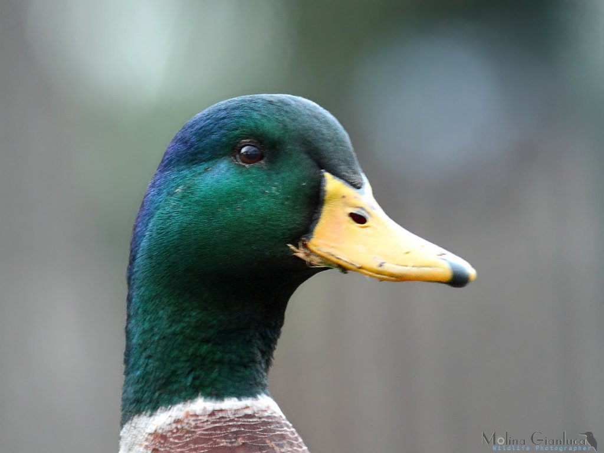

Il Germano reale è la più diffusa tra le specie di anatre selvatiche: in Europa occidentale se ne stima una presenza pari a oltre 9 milioni di individui. I maschi sono generalmente più numerosi delle femmine, anche a causa dell’alta mortalità che si registra tra queste ultime durante l’incubazione. L’Anas platyrhynchos trascorre gran parte della giornata sull’acqua e si spinge sulla terraferma solo per la nidificazione o per riposare. I suoi ambienti prediletti sono dunque quelli che presentano specchi o corsi d’acqua tranquilli – paludi, stagni, laghi e fiumi – circondati da porzioni di terreno sufficienti per sistemarvi il nido e sorvegliarlo. La specie è ampiamente presente in tutte le regioni temperate dell’America settentrionale, dell’Europa e dell’Asia, dal livello del mare fino a 2.000 metri di altitudine. Il periodo della riproduzione va da febbraio a luglio – a seconda della latitudine – e la cova delle uova, il cui numero può variare da 5 a 15, dura circa 26-28 giorni. Il nido è piuttosto rudimentale – fatto di ramoscelli e di piume che la femmina strappa da un punto particolare del proprio petto – e la scelta del luogo non è particolarmente impegnativa: di solito si tratta di siti all’asciutto presso zone umide. Il Germano reale può raggiungere una lunghezza di 56 cm nel maschio e di 52 centimetri nella femmina, con un’apertura alare di 91-98 centimetri e un peso variabile tra i 700 e i 1.440 grammi. Assai marcate sono le differenze tra i sessi per quanto riguarda la colorazione del piumaggio. Il maschio ha testa e collo di un bel verde scuro – ma brillante – e un sottile collare bianco che sottolinea il contrasto con il nero del petto. Anche la coda è scura, con sfumature grigie e qualche tratto bianco. Il resto del corpo è grigio brillante, con riflessi argentati e altri più scuri. La femmina, al contrario, è in prevalenza bruna, con una varietà di sfumature dal beige al marrone.
